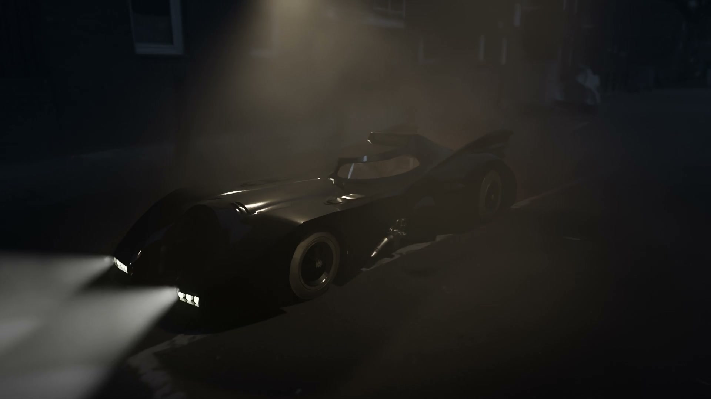
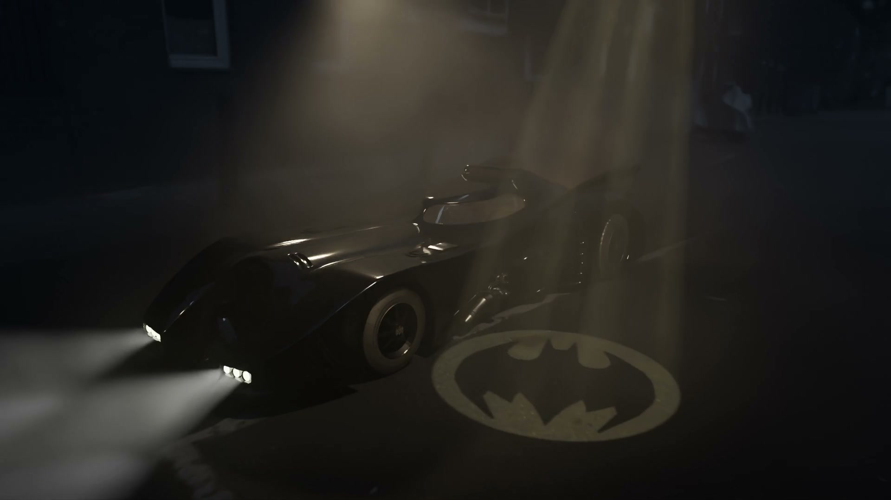
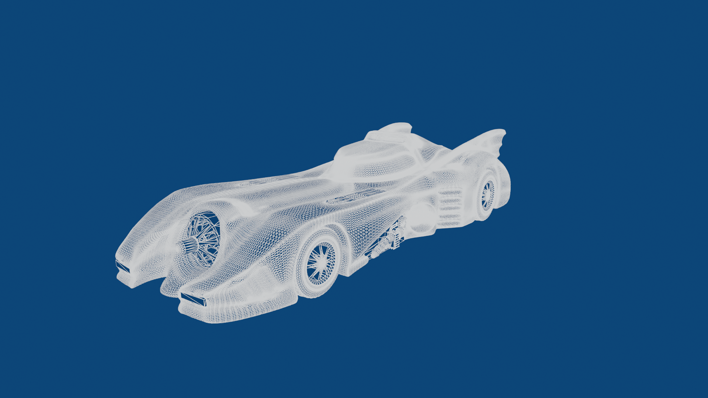

v0014 · Gotham Night Volumetrics
Dark street HDRI, sodium-vapour streetlights, drifting 3D fog volume, and forward headlight beams.
Modelled in Autodesk Maya, PBR-textured in Substance Painter, and re-lit in Blender 5.3 Cycles at film-accurate 6.63m scale with Gotham night volumetrics and a physical 3D Bat-Signal gobo projection.
1989_Batmobile.fbx
Dark street HDRI, sodium-vapour streetlights, drifting 3D fog volume, and forward headlight beams.
Adds the 3D Bat-Signal gobo shaft on the tarmac, 6 individual recessed headlight beams, subdivision-smoothed wheel arches, and deeper crimson tail lights.
Overhead 360° Cycles pass from batmobile_hdri_0027.blend capturing the sliding cockpit canopy under Gotham street HDRI reflections.
Overhead 360° viewport playblast showcasing the rigged forward-sliding cockpit canopy (Canopy_Slide_Rig) and sculpted dual-seat interior.
Architectural cyan-blue wireframe overhead rotation from batmobile_blueprint_0004.blend highlighting the sliding canopy track and 6.63 m silhouette.
Original 1989 Batmobile 3D model presentation.
Wireframe on shaded & unsmoothed Maya topology pass.
Subdivision-smoothed Maya viewport playblast.
Original LIT Maya & Substance Painter render pass.
Original model overview turntable video.

Initial Gotham night volumetric street pass

Bat-Signal, 6 beams & smoothed wheel arches

Architectural wireframe + comic pop-in trivia